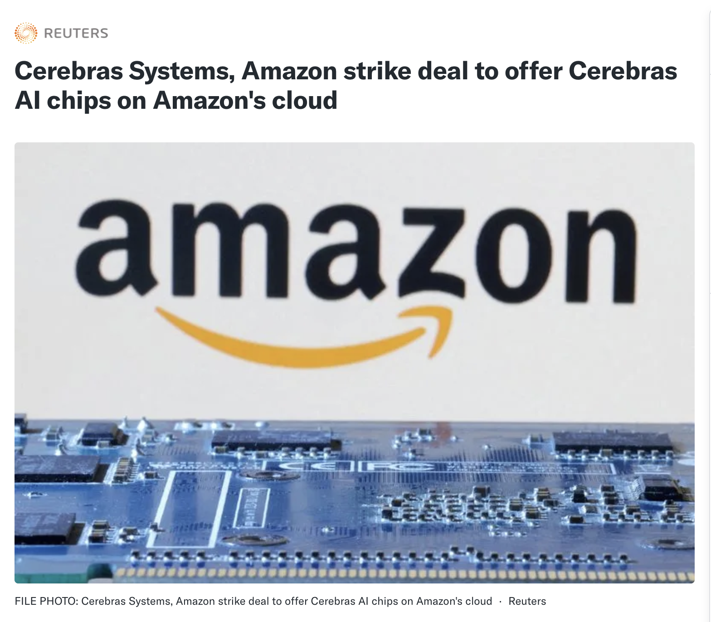

def forward(self, x): x = x + self.bias x = torch.clamp(x, 0, 1) x = x * self.scale x = torch.clamp(x, 0, 1) return x / self.scale
__global__ void fused_epilogue( const bf16* x, const bf16* bias, float scale, bf16* y) { int i = blockIdx.x*blockDim.x + threadIdx.x; float v = float(x[i]) + float(bias[i%C]); v = __saturatef(v); // clamp [0,1] v = __saturatef(v*scale) / scale; y[i] = __float2bfloat16(v); // one pass }